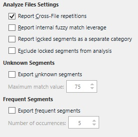

Analyze Files Settings
The Analyze Files task is used to determine the TM leverage for the selected project file(s). This means that it determines how many TUs of the main TMs match the segments in the project files. The task also determines the rate of repeated segments, i.e. repetitions within a document or cross-file repetitions. The task also determines the total number of segments, words, and characters. Therefore it is even useful when no TMs have been added to the project. This chapter provides detailed information on the various settings that you can configure to fine-tune this task programmatically.
Configure the Task Settings
The screenshot below shows the settings that can be configured for the Analyze Files task in Trados Studio.

To configure the task settings programmatically, implement a helper function called GetAnalyzeTaskSettings, which takes a FileBasedProject object as parameter. The settings for a particular task are saved within the project. The settings can either apply to the entire project or can be target-language specific, e.g. when the German files require different task settings from the French files. Each project is associated with a settings bundle, which contains the settings for all tasks (e.g. analyze, pre-translate, etc.). First, create a ISettingsBundle object by applying the GetSettings method to the project object. Then apply the GetSettingsGroup method to generate a settings object based on the AnalysisTaskSettings class:
ISettingsBundle settings = project.GetSettings();
AnalysisTaskSettings analyseSettings = settings.GetSettingsGroup<AnalysisTaskSettings>();
Afterwards, you configure the task-specific settings as follows:
Report Cross-file Repetitions
Repetitions are segments that are not stored in any of the selected main TMs, but that occur more than once within a document, or that are repeated over several documents. Through the boolean ReportCrossFileRepetitions property you can determine whether the analyze task should consider identical segments in different project files as repetitions or not. The default value is True.
analyseSettings.ReportCrossFileRepetitions.Value = true;
Report Internal Fuzzy Match Leverage
By default, only identical segments are considered as repetitions. However when setting the ReportInternalFuzzyMatchLeverage boolean property to True the analyze task will also regard similar segments as repetitions. If this is the case, for example, the segment "This is a short segment." will be considered a 'fuzzy repetition' of the segment "This is a long segment."
Export Frequent Segments
Sometimes it can be useful to consolidate repeated segments in one file. This generates an SDLXliff document that contains only one occurrence of each repeated segment. This can help users translate repetitions more effectively and consistently, and then insert these translations into the 'actual' documents. By setting the ExportFrequentSegments property to True you can cause the task to generate a file in which all repetitions are consolidated at a central place. Through the FrequentSegmentsNoOfOccurrences property you set how many occurrences a segment should have at minimum to be exported to such a separate file. The default value is 5.
analyseSettings.ExportFrequentSegments.Value = true;
analyseSettings.FrequentSegmentsNoOfOccurrences.Value = 5;
Export Unknown Segments
You may also have the task export any segments for which no match in the main TM(s) was found, or that fall below a specific fuzzy threshold. This may be useful if the analyze results show that, for example, out of 1,000 segments only 20 are unknown. In this case you can 'extract' those 20 unknown segments and consolidate them in a separate file for special processing. By setting the ExportUnknownSegments property to True you can generate an SDLXliff file that only contains the unknown segments. Through the UnknownSegmentsMaximumMatchValue property you set the fuzzy match value from which a segment should be regarded as being unknown, and thus exported. The default value here is 75.
analyseSettings.ExportUnknownSegments.Value = true;
analyseSettings.UnknownSegmentsMaximumMatchValue.Value = 50;
After configuring all task settings you need to update the project by applying the UpdateSettings method as shown below:
Putting it All Together
The complete function should look as shown below:
public void GetAnalyzeTaskSettings(FileBasedProject project)
{
#region "AnalysisTaskSettings"
ISettingsBundle settings = project.GetSettings();
AnalysisTaskSettings analyseSettings = settings.GetSettingsGroup<AnalysisTaskSettings>();
#endregion
#region "ReportCrossFileRepetitions"
analyseSettings.ReportCrossFileRepetitions.Value = true;
#endregion
#region "ReportInternalFuzzyMatchLeverage"
analyseSettings.ReportInternalFuzzyMatchLeverage.Value = true;
#endregion
#region "ExportFrequentSettings"
analyseSettings.ExportFrequentSegments.Value = true;
analyseSettings.FrequentSegmentsNoOfOccurrences.Value = 5;
#endregion
#region "ExportUnknownSegments"
analyseSettings.ExportUnknownSegments.Value = true;
analyseSettings.UnknownSegmentsMaximumMatchValue.Value = 50;
#endregion
#region "UpdateAnalyzeSettings"
project.UpdateSettings(settings);
#endregion
}
See Also
Update Translation Memory Settings